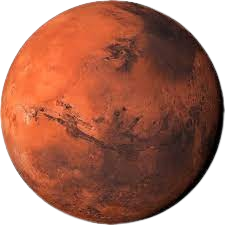

Welcome to Mars

Mars is known as the Red Planet.This is because Mars is covered in soil, rock and dust made from iron oxide which gives the surface a red rusty colour.One year on Mars is 687 Days long.That's 1.9 Earth years.This is because Mars is further away from the sun so it takes longer to orbit. Mars is the fourth planet from the sun and two unusual moons has a very thin atmosphere,but the dusty, lifeless(as far as we know it) planet is far from dull.
Scientists and Engineers are exploring solutions such as building haditats underground or using Martian soil to shield against radiation.No proof of past or present life has been found on Mars.The surface environment of Mars had liquid water and may have been habitable for microorganisms,but habitable conditions do not necessarily indicate life.
قال تعالى في سورةالإنفطار: (إِذَا ٱلسَّمَآءُ ٱنفَطَرَتۡ * وَإِذَا ٱلۡكَوَاكِبُ ٱنتَثَرَتۡ)